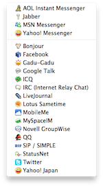
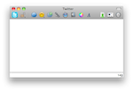

Adium Documentation
Welcome to the Documentation!
Adium seeks to be the most user-friendly and intuitive universal instant messaging client possible while maintaining significant flexibility. This documentation should help to answer most any question you may have; if you have a concern or request not covered here, please visit Adium Help.
The articles below cover a wide range of topics from initial setup and messaging to advanced contact list management and customization.
So don't hesitate – jump right in! :)
Accounts
|  | Adium supports 21 different IM protocols from AIM to Yahoo. It lets you connect as many names on as many different services as you want all at the same time and gives you the flexibility to maintain all your contacts on a single contact list. |
||
|
|||
The contact list
 |
The contact list shows which contacts are online, their status and the protocol that they are on. Maintain all your contacts from different accounts in a single list and organize them in groups and combine contacts with multiple accounts into one entity. |
||
Messaging
|  | The Messaging window lets you communicate with your contacts. There are various features of this window from choosing which account of your contact you're talking to or want to talk to, adding files and emoticons to conversations and past chat history with the contact. |
||
Advanced features
 |
Adium sports a variety of advanced features. |
||
Miscellaneous
This section covers a few topics that do not fit in the other sections. |
|||
Services supported
On the following pages you can find some information on the different service supported, e.g. history and censorship. |
|||
|
|||